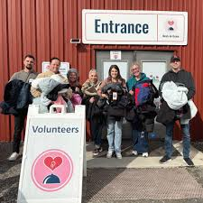
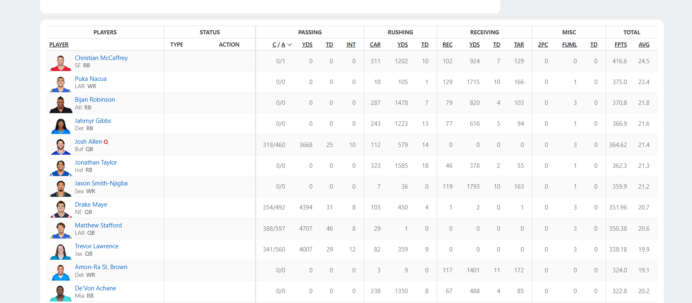
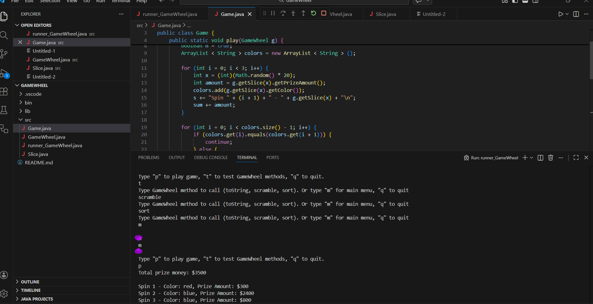

Projects:
These are my experiences in various projects and past internships and volunteering.

Meals By Grace - Volunteer Leadership
Led a subteam responsible for organizing and distributing detergent and household essentials to thousands of families each week at a nonprofit fighting food insecurity.
What I did: Coordinated team operations, managed inventory of supplies, ensured efficient distribution to families, and built connections with community members over 150+ volunteer hours.
Skills developed: Team leadership, logistics coordination, inventory management, attention to detail, community engagement

Fantasy Football Stats Website
A web application that stores and displays comprehensive player statistics and performance data, helping fantasy football users analyze trends and make informed lineup decisions.
What I did: Built a full-stack application with a Java backend to handle data processing and user requests, designed and implemented an SQL database to store player stats and historical data, and created an intuitive interface for users to search and compare players.
Technologies used: Java, SQL, HTML/CSS, JavaScript

Game Wheel Simulator - Java Terminal Application
An interactive command-line game that simulates a spinning prize wheel, randomly selecting rewards for players using probability-based mechanics.
What I did: Developed a Java terminal game with randomized prize selection, implemented user input handling for game controls, designed a probability system to determine prize rarity and distribution, and created engaging text-based graphics to simulate wheel animation.
Technologies used: Technologies used: Java, Random class for probability mechanics, Scanner for user input